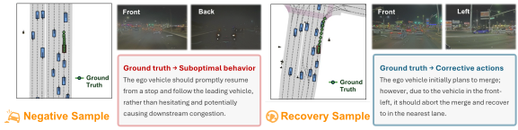
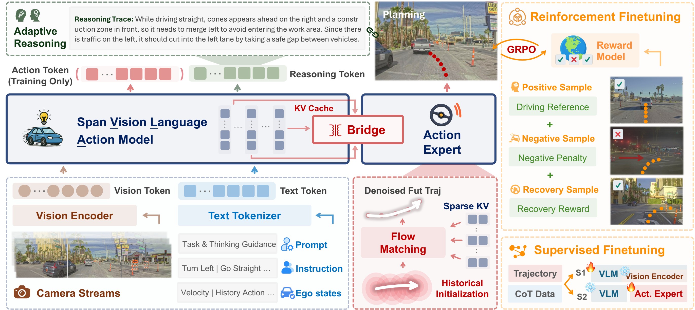
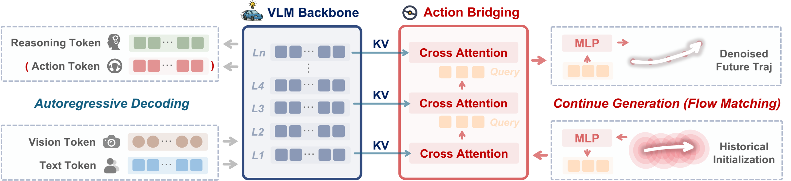
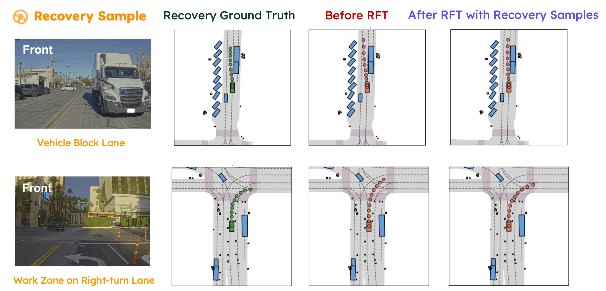

nuReasoning-NR
A real-world driving dataset and benchmark combining positive reasoning, suboptimal trajectories, and expert recovery trajectories.
Overview
Expert demonstrations teach a driving VLA what to do. Negative and recovery experiences add two complementary lessons: which behaviors to avoid, and how to correct behavior from difficult driving states.
A real-world driving dataset and benchmark combining positive reasoning, suboptimal trajectories, and expert recovery trajectories.
Asymmetric rewards penalize undesirable behaviors and reinforce expert corrections. Advantage correction maintains useful learning signals in difficult rollout groups.
Autoregressive reasoning guides a lightweight flow-matching expert through sparse-layer KV caches and historical trajectory initialization.
Vision-Language-Action (VLA) models bring rich world knowledge and reasoning capabilities to autonomous driving. However, most driving VLAs are trained only on positive expert demonstrations, which teach models what to do but provide limited supervision on which behaviors to avoid and how to recover from these failures, leading to limited robustness. We introduce SpanVLA, a robust and efficient driving VLA, together with nuReasoning-NR, the first real-world driving dataset and benchmark for learning from negative and recovery samples. An extension of nuReasoning, it comprises 36K reasoning-intensive driving scenarios, including 3K suboptimal trajectories and 3K expert recovery trajectories. To exploit their asymmetric supervision, we introduce Negative–Recovery Reinforcement Fine-Tuning (NR-RFT), which penalizes undesirable behaviors and rewards expert corrective actions. Because challenging scenarios produce rollout groups dominated by similar suboptimal or even infeasible trajectories, it further incorporates an advantage correction to preserve informative optimization signals and encourage exploration. For efficient action generation, SpanVLA retains autoregressive reasoning and introduces a lightweight flow-matching action bridge conditioned on sparse-layer KV caches and initialized from the historical trajectory. Extensive experiments on NAVSIM v1/v2, nuReasoning, and the nuReasoning-NR benchmark demonstrate strong and robust planning performance and efficient action generation. Qualitative results across diverse challenging scenarios further highlight its planning robustness and recovery capability. The dataset and benchmark code will be released to support future research.
Real-world data & evaluation
An extension of nuReasoning with 36K interaction-intensive driving samples.
Expert trajectories and reasoning annotations teach decision-making and planning.
Suboptimal trajectories show
which behaviors to avoid.
Subsequent expert corrections teach how to recover from challenging driving states.

Learning from experience
Penalize matching negative behavior.
Beyond the matching threshold,
no extra reward is given.
Agreement with an expert correction earns a recovery reward, alongside the driving-quality reward.
Remove standard-deviation normalization.
Use a virtual reward for all-zero groups
to preserve learning signals.

Efficient inference

Accessing selected VLM layers provides multi-granular context with less computation than dense layer-wise conditioning.
Flow matching learns the transformation from past motion to future actions, using historical trajectory embeddings as its starting point.
Experimental evidence
| Method / supervision | Negative ↑ | Recovery ↑ | Average PDMS ↑ |
|---|---|---|---|
| LTF · positive only | 62.7 | 51.0 | 56.8 |
| ReCogDrive · positive only | 64.0 | 54.0 | 59.0 |
| AutoVLA · positive only | 64.2 | 54.0 | 59.1 |
| SpanVLA · positive only | 65.1 | 56.1 | 60.6 |
| AutoVLA + NR | 68.8 | 59.5 | 64.2 |
| SpanVLA + NR | 74.1 | 65.1 | 69.6 (+14.9%) |


| Method | Sensors | NAVSIM v1 PDMS ↑ | NAVSIM v2 EPDMS ↑ | v2 navhard EPDMS ↑ |
|---|---|---|---|---|
| TransFuser | Camera + LiDAR | 84.0 | 76.7 | 23.1 |
| Hydra-MDP | Camera + LiDAR | 86.5 | 81.4 | — |
| DiffusionDrive | Camera + LiDAR | 88.1 | 84.5 | 24.2 |
| AutoVLA | Camera | 89.1 | 82.4 | — |
| ReCogDrive | Camera | 89.6 | 83.6 | — |
| DriveVLA-W0 | Camera | 90.2 | 86.1 | — |
| Qwen-Drive | Camera | 90.7 | — | — |
| RAP-DINO | — | — | — | 36.9 |
| SpanVLA | Camera | 90.8 | 86.9 | 40.8 |
| SpanVLA* · best-of-6 | Camera | 93.3 | 90.5 | 47.9 |
| Method | Waypoints | Trajectory generation ↓ | Total latency ↓ |
|---|---|---|---|
| AutoVLA · autoregressive | 10 | 0.40 s | 1.25 s |
| SpanVLA · flow matching | 10 | 0.08 s | 0.67 s |
| AutoVLA · autoregressive | 50 | 1.72 s | 2.57 s |
| SpanVLA · flow matching | 50 | 0.08 s | 0.67 s |
For 50-waypoint trajectories, action generation takes 0.08 s instead of 1.72 s (21.5× faster). Reported total latency falls from 2.57 s to 0.67 s (approximately 74% lower). The bridge’s measured trajectory-generation time stays approximately unchanged from 10 to 50 waypoints.
Resources
@article{zhou2026spanvla,
author = {Zhou, Zewei and Yang, Ruining and Qi, Xuewei and Guo, Yiluan and Chen, Sherry X. and Feng, Tao and Pistunova, Kateryna and Shen, Yishan and Su, Lili and Ma, Jiaqi},
title = {SpanVLA: Learning from Negative-Recovery Samples with Fast Action Bridging for Vision-Language-Action Model},
journal = {arXiv preprint arXiv:2604.19710},
year = {2026}
}We thank Qian Zhu, Haram Kim, and Baoshu Qi for data preparation and annotation of nuReasoning-NR; Muhammad Taufik Tirtosudiro and Jiong Yang for support with the evaluation pipeline; and Nitin Kapania, Sourabh Vora, and Balajee Kannan for their support for the project. We also thank the Amazon AI PhD Fellowship and the Qualcomm Innovation Fellowship for their support.